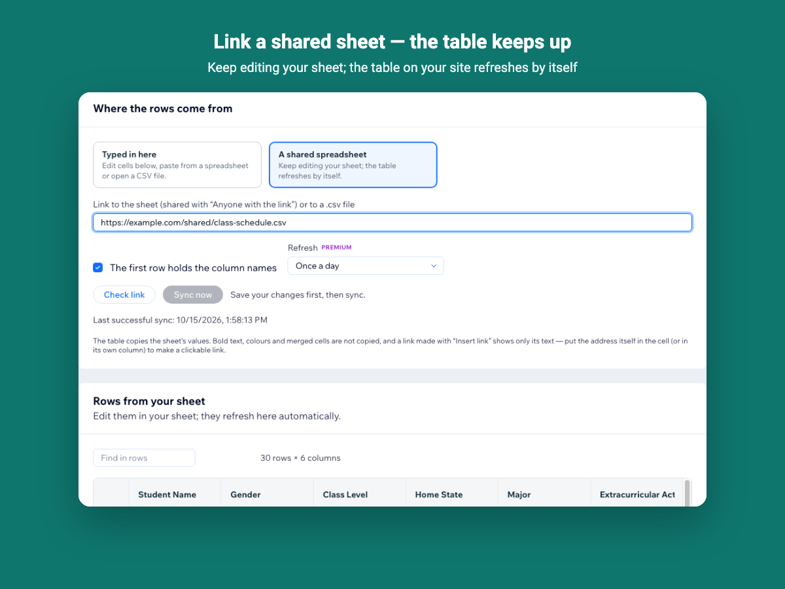
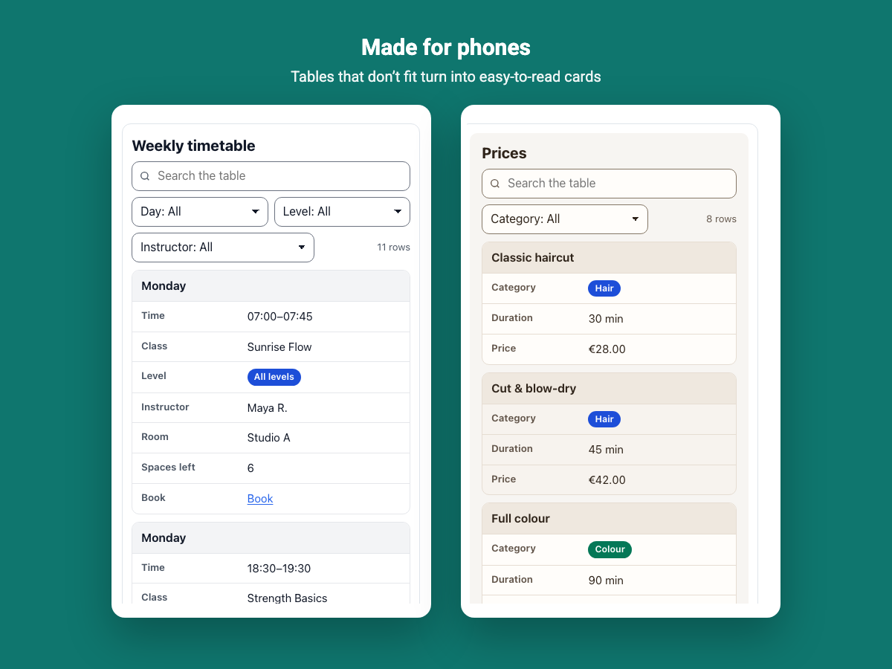

How to show a Google Sheet as a table on a Wix site
If your prices, schedule or stock already live in a Google Sheet, the page should follow the sheet — not a copy you have to update by hand.
1. Share the sheet
In Google Sheets, click Share and set general access to Anyone with the link — Viewer. Data Tables reads the sheet through that link; it never asks for your Google account. Anyone with the link can read the sheet, so keep private columns in another sheet.
2. Link it in Data Tables
Create a table, choose A shared spreadsheet under Where the rows come from, paste the sheet address and click Check link. A link to a published CSV file works too. The first row is used for column names unless you untick that option.

3. How refreshes work
The table refreshes from the sheet once a day on the Free plan and up to every hour on Premium; Sync now refreshes it immediately. If the sheet cannot be read — it was unshared, moved or grew past the row limit — the last good version stays on your page and the dashboard explains what happened in plain words.
4. What is copied
The table copies the values of the sheet. Bold text, colors and merged cells are not copied, and a link made with Insert link keeps only its text, so put the address itself in a cell to make a clickable link. Column types, filters and the design are set in the app and stay when the sheet changes.
5. Place it on a page
Add the Data Tables widget to a page in the Wix Editor, pick the table and publish. On phones, rows that do not fit turn into readable cards.

See it in the Wix App Market